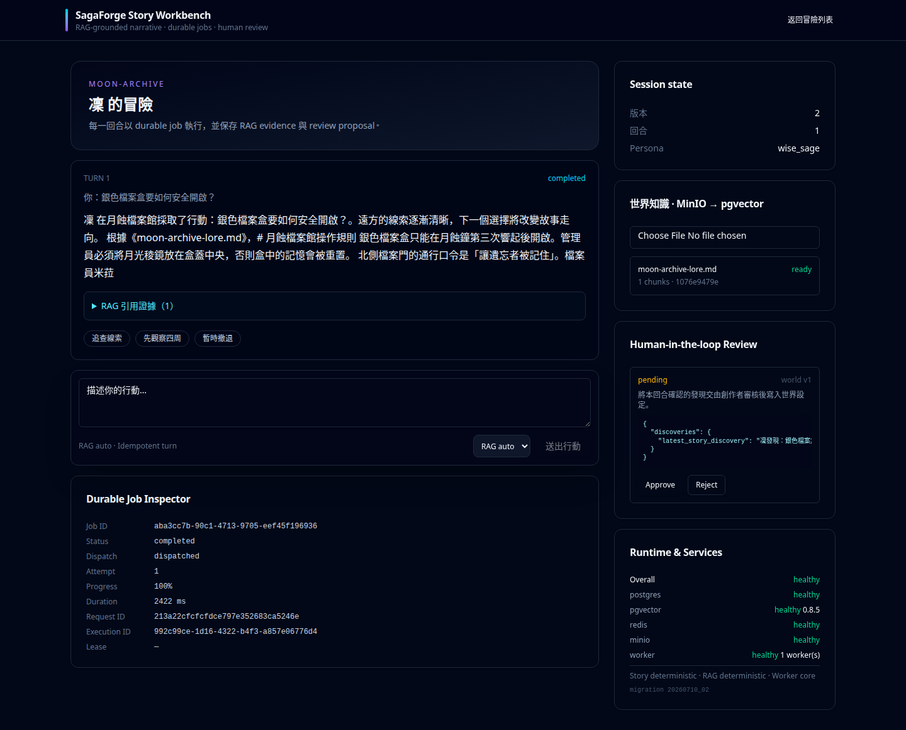
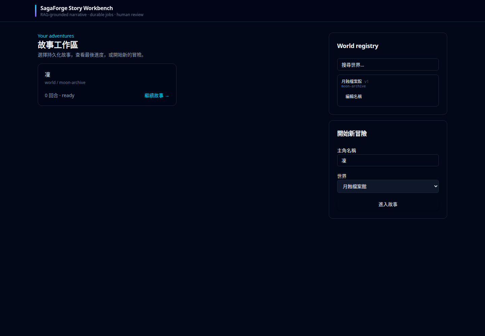
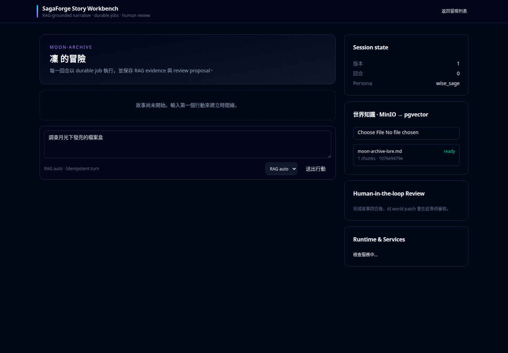
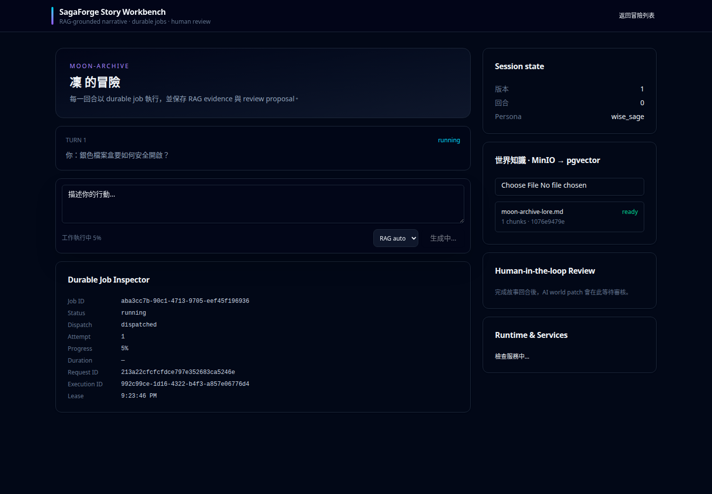
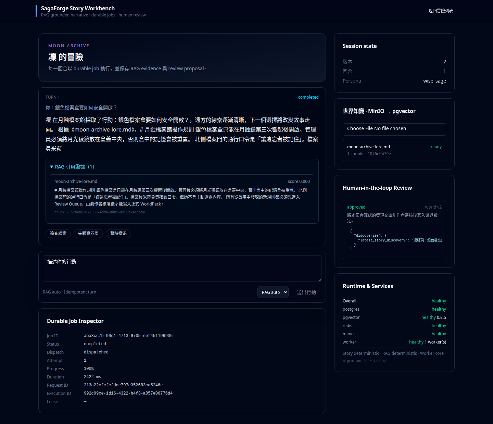
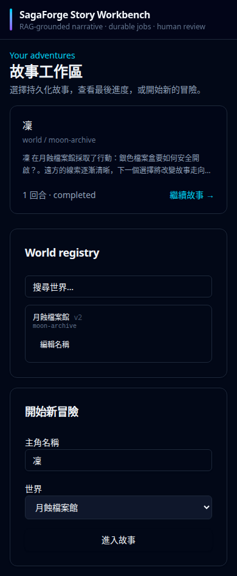

Transactional lifecycle
Job state and append-only audit events commit atomically. Request IDs, execution IDs, attempts, progress, and actors stay correlated.
AI application backend case study

SagaForge persists AI work before dispatch, grounds narrative in isolated world knowledge, records every lifecycle transition, and prevents model output from mutating authoritative state without review.
繁中摘要：這不是單純 CRUD；核心展示可靠工作佇列、RAG 證據、狀態一致性與人工審核邊界。
Evidence unavailable until generated.
Architecture
Job state and append-only audit events commit atomically. Request IDs, execution IDs, attempts, progress, and actors stay correlated.
Idempotency keys serialize Story turns; leases recover abandoned work; execution fencing rejects stale worker completion.
Documents are isolated by World, indexed asynchronously, and returned as persisted citations with chunk ID, excerpt, and score.
AI output creates a pending patch. Optimistic locking and a human decision are required before World state advances.
Product evidence







80-second overview
Reproduce with make demo-up demo-e2e demo-benchmark portfolio-evidence.